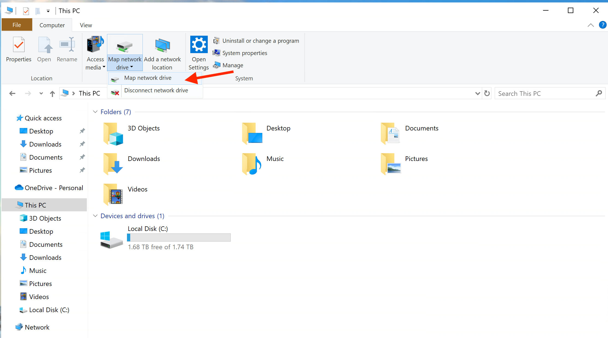
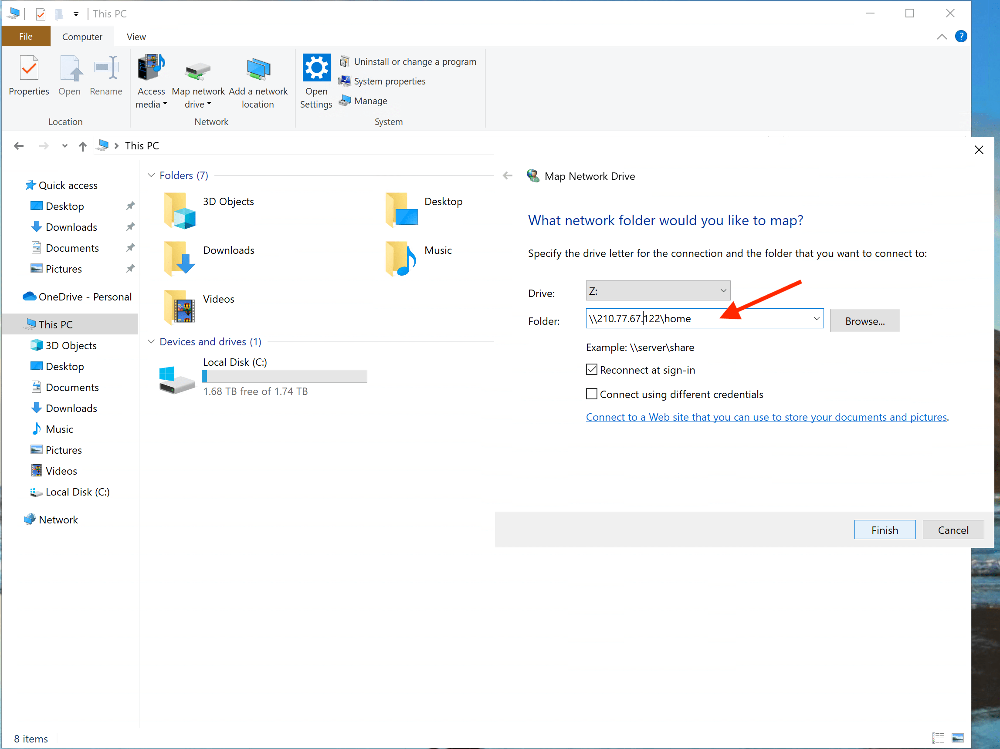
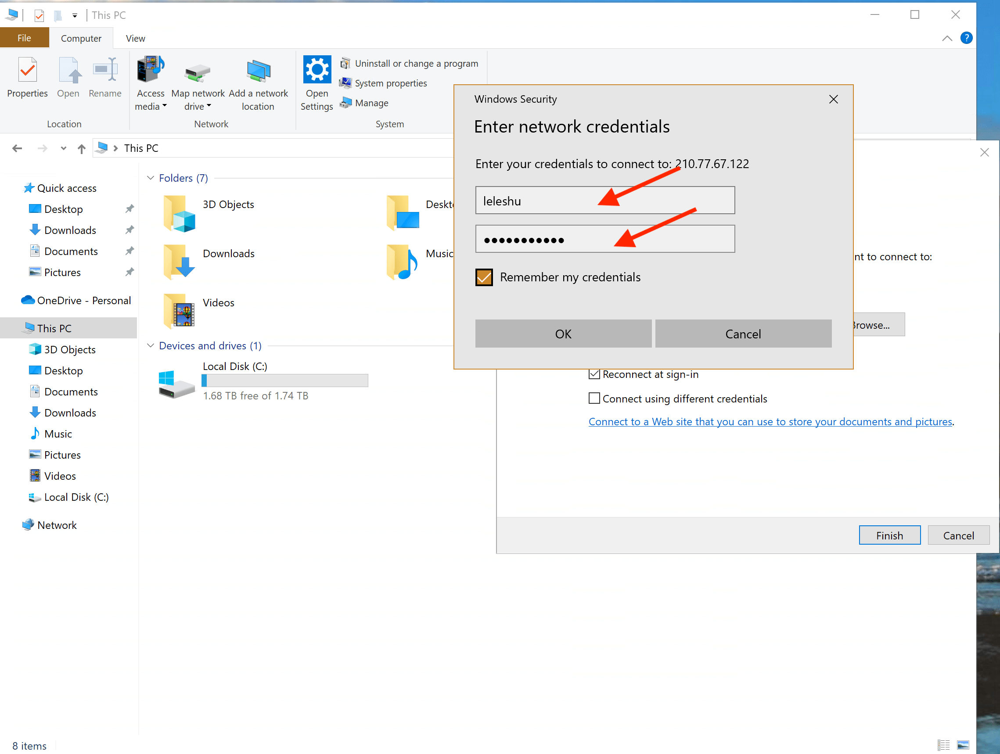
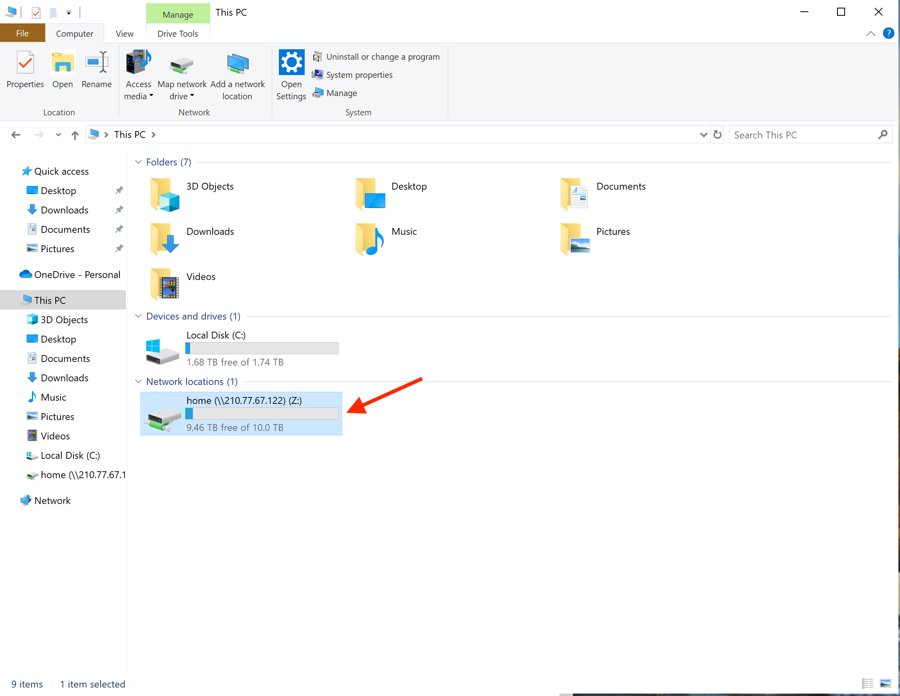
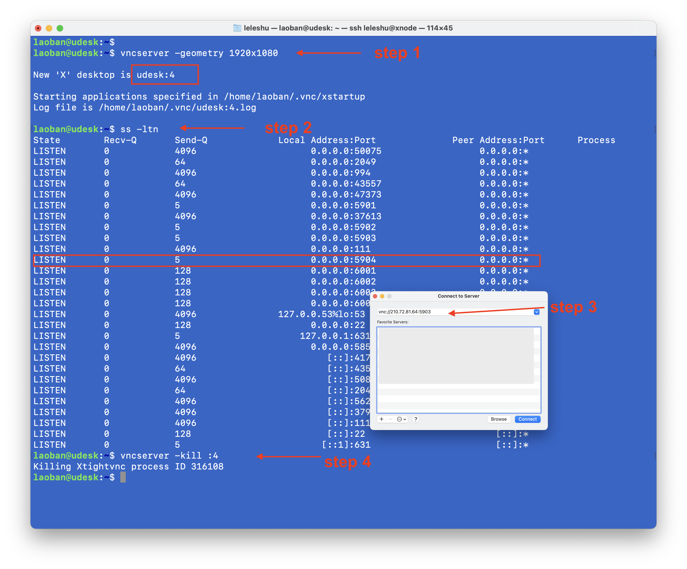
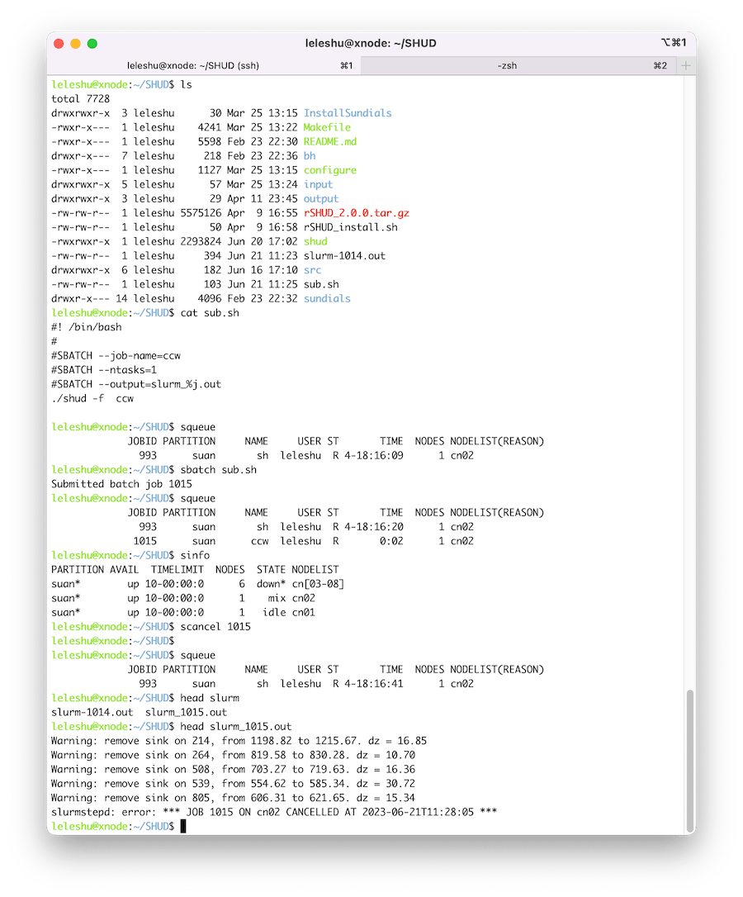

Chapter 5 计算与存储
本研究组分别有三台共组员使用的计算服务器和网络存储. 三台服务器分别为Windows Server远程桌面、Ubuntu远程桌面、多节点高性能计算机群（SHUDHPC）。
各服务器访问IP分别为：
| 平台 | 主机名 | 公网IP地址 | 内网IP地址 | 端口转发地址 |
|---|---|---|---|---|
| 计算集群 | SHUDHPC | shud.vip(210.77.77.22) | 10.0.1.100 | 210.77.77.25:318xx |
| Ubuntu远程桌面 | uDesk | 210.77.77.23 | 10.0.1.23 | 210.77.77.25:319xx |
| Windows远程桌面 | Win-Desk | 210.77.77.24 | 10.0.1.24 | 210.77.77.25:320xx |
| 路由器 | H3C | 210.77.77.25 | 10.0.1.1 | 无 |
| NAS共享网盘 | shudxyz | nas.shud.vip(210.77.77.36) | 10.0.1.26 | 无 |
注意：ssh登录端口统一为32099
SHUDHPC与uDesk通过NIS共享同一套账户系统，因此，在SHUDHPC和uDesk上面的登录账户和用户主目录完全相同；uDesk上支持Linux图形桌面，方便用户进行可视化操作。
5.1 NAS网络存储
本组使用群辉DS1821+建设了100TB的网络存储空间，供组内成员和合作者使用。
Synology Drive是依托本组的NAS网络存储建设的，可以远程以网络磁盘的方式访问，也可以使用sftp,、Synology Drive、rsync、SMB、AFP、NFS等方式访问。
5.1.1 账号开通/注销
账号开通
- 在加入本组后，向PI报告你的邮箱；由PI给你开通账号，并告知用户名和密码。
- 账号的权限等级由个人身份决定，不同权限对NAS的读写权限略有不同。
- 账号开通后，你会收到一封邮件，邮件包含了NAS服务的访问地址。请在收到邮件后登录NAS页面，并修改秘密。
账号注销
- 成员离开本组后，账号会继续保留至少一年。
- 你可以在一年内，备份个人网盘内的数据。一年后，你的账号将被删除，无法再访问NAS系统。
5.1.2 NAS文件结构
当前的NAS文件结构与读写权限见下图：

更具体的信息见下表：
| 文件夹 | 学生权限 | 合作者权限 | 容量 | 注意事项 |
|---|---|---|---|---|
| homes | 无 | 无 | 无限 | 所有用户文件都存放于此，普通用户无法访问 |
| home | 读写 | 读写 | 10TB | 用户个人主目录，其他用户无法访问 |
| SpatialData | 只读 | 只读 | 10TB | 仅特定用户有权更新 |
| ForcingData | 只读 | 只读 | 10TB | 仅特定用户有权更新 |
| SHUDgroup | 读写 | 读写 | 10TB | 组内成员间自动同步。勿随意存放文件 |
| Shared | 读写 | 读写 | 10TB | 共享资源 |
| Download | 读写 | 读写 | 无限 | 文件临时存放。所有人可写，勿长期存放重要文件 |
| Baomi | 无 | 无 | 无限 | 保密数据，仅在特殊需要时共享给指定用户 |
5.1.3 访问NAS
- NAS名称: shudxyz
- NAS访问地址： https://nas.shud.vip 或者 https://nas.shud.vip
- 用户名：username[默认为姓名全拼]
- 密码: [随机密码，请查看邮件]
5.1.4 NAS 作为网络磁盘
Mac OS
- 打开Finder（访达），然后使用键盘CMD+k，访问网络地址。
- 在打开的窗口中输入：
afp://nas.shud.vip或者afp://210.77.77.36。然后点击连接（Connect） - 然后提示框要求输入
用户名和密码。 - 选择你需要加载的磁盘。
Windows
- 打开文件管理器，找到
映射网络磁盘(Map network driver)，

- 在打开的窗口中输入需要加载的
磁盘IP和路径，例如\\nas.shud.vip\home或者\\nas.shud.vip\ForcingData。点击完成

- 根据提示框输入登录NAS使用的
用户名与密码。点击OK

- 然后系统会加载指定的网络磁盘，映射其为本地磁盘。此后该网络磁盘将可以像一般本地磁盘一样操作。

- 打开文件管理器，找到
注：如果在Windows远程桌面(Win-Desk)上加载NAS，使用本地IP(10.0.1.x段)，可以显著提高网络磁盘的读写速度。
5.1.5 云盘Synology Drive
这应该是进入本组第一个学会的软件。软件的安装使用都非常简单，但是你需要学会的是重新思考:
- 如何组织自己的文件？
- 如何高效的定位自己的文件？
加入本组的工作全部在Synology Drive上进行同步。同步文件夹的内容仅自己可以看到，其他用户看不到。 文件备份在NAS云端，任何地点任何电脑上都可以查看/编辑你云盘里面的文件，不会出现“电脑坏了，文件丢失”，“文件染病毒打不开”，“电脑忘记带了，没法交作业”的情况。
注意：Synology Drive使用中有同步(sync)和备份(backup)两种模式，建议一定要使用同步模式，保证自己每一次保存的文件都实时同步在云端。 是否启用备份模式，可以自行选择。
5.2 Windows远程桌面
服务器硬件配置
| 类别 | 配件 | 参数 | 备注 |
|---|---|---|---|
| 平台 | 浪潮雷神SA5212 H5 | 12盘位2U机架式服务器 | |
| CPU | 至强Xeon 金牌 6133 | 每CPU 20核40线程，2.5GHz | 双CPU |
| 内存 | 192GB | DDR4 2666Mhz， 12x 16GB | 6通道内存，12条 |
| 硬盘 | U.2 NVME | 2TB | |
| 网卡 | 10Gbps 光口 |
5.3 Ubuntu服务器
服务器硬件配置
| 类别 | 配件 | 参数 | 备注 |
|---|---|---|---|
| 平台 | 浪潮雷神SA5212 H5 | 12盘位2U机架式服务器 | |
| CPU | 至强Xeon 金牌 6133 | 每CPU 20核40线程，2.5GHz | 双CPU |
| 内存 | 16GB x12 | DDR4 2666Mhz， 16 GBx12 | 6通道内存，12条 |
| 硬盘 | U.2 NVME | 2TB | |
| 网卡 | 10Gbps 光口 | 两路光纤 |
5.3.1 操作系统与软件
- 操作系统：Ubuntu 20.04， 支持远程GUI登录。
- 远程桌面系统：xfce4
- GIS软件：QGIS 3.10
- R: R, Rstudio
- Octave
5.3.2 SSH登录
公网IP登录
- 登录IP： 210.77.77.23
- 软件：ssh (命令行);
- 端口: 32099
示例：
ssh zhangsan@210.77.77.23路由器转发登录
- 登录IP： 210.77.77.25
- 软件：ssh;
- 端口: 32022
| 访问端口 | 服务器SSH端口 |
|---|---|
| 32022 | 32099 |
示例：
ssh -p 32022 zhangsan@210.77.77.235.3.3 VNC远程桌面
- 软件：VNC （远程桌面)
- 端口: 共20个端口，最多支持20个VNC远程桌面，端口对应关系如下表：
| 访问端口 | 服务器VNC端口 |
|---|---|
| 32001 | 5901 |
| 32002 | 5902 |
| 32003 | 5903 |
| 320xx | 59xx |
| 32020 | 5920 |
Ubuntu服务器端配置：建立vnc密码，并修改~/.vnc/xstartup文件。
vncpasswd
touch ~/.vnc/xstartup
chmod +x ~/.vnc/xstartup
vim ~/.vnc/xstartup在文件中输入文件内容：
#!/bin/sh
unset SESSION_MANAGER
unset DBUS_SESSION_BUS_ADDRESS
startxfce4 &登录远程桌面： 
在服务器端启动vncserver。
-geometry参数可以设置远程桌面的分辨率。以下命令三选一vncserver -geometry 1440x900 vncserver -geometry 1920x1080 vncserver -geometry 2560x1440然后使用
ss -ltn当前vnc桌面的端口号码，默认第一个vnc桌面端口号为5901，第二个为5902，以此类推。或者通过命令server -list查看。 使用路由器端口转发，需要将590x的端口转换为320xx的端口，转换规则见前表。如果直接使用服务器公网IP，则直接使用590x端口。在客户端启动vnc工具，访问[serverIP]:[端口号]。 如使用公网IP，且vnc服务端口为5904：
vnc://210.77.77.23:5904如使用路由器IP，且vnc服务端口为5904，则转发端口为32004:
vnc://210.77.77.25:32004完成远程桌面工作后，退出vncserver时，需要关闭响应的vnc服务器，请在远程服务器端输入：
vncserver -kill :4
使用完远程桌面，请主动关闭该vncserver
5.4 SHUDHPC高性能计算集群
高性能计算机（High-performance computer，HPC）是由多台计算机构成的服务集群(cluster)。HPC主要由计算服务器、管理服务器和存储服务器组成，但只设有一个登录入口。用户登录到HPC后，只需将需要计算的相关任务提交至超算平台，平台计算任务调度系统将根据任务的需求和实际可用资源对任务进行排队和资源分配。
5.4.2 服务器硬件配置
| 大类 | 平台 | 参数 | 备注 |
|---|---|---|---|
| 平台 | 高性能计算集群 | 8计算节点，1登录节点，1高速存储 | 56G IB网络, 10G 以太网 |
| 登录节点 | 超聚变2288 V6 | 2x 至强6318Y （56核），128G，2TB U.2 NVME | |
| 存储 | 超聚变2288 V6 | 14x 16TB, RAID 5 | 173TB可用 |
| 全闪存储 | 泰安3036 | 12x 3.76TB, ZFS RAIDZ2 | 34TB可用 |
| 计算节点 | 超微八节点高密计算平台 | 每节点：至强6133 40核(2x 20)，192GB内存 | |
| IB交换机 | SX6025 | 36x 56Gbps | InfiniBand |
| 万兆以太交换机 | IBM | 48x 10Gbps，4x 40Gbps | 全光口 |
| 千兆以太交换机 | H3C | 48x 1Gbps | 全光口 |
5.4.3 SHUDHPC IP地址配置
| 节点 | 主机名 | 万兆IP | InfiniBand IP地址 |
|---|---|---|---|
| 登录节点 | xnode | 10.0.1.100 | 10.0.2.100 |
| 全闪存储 | flash | 10.0.1.99 | 10.0.2.99 |
| 存储 | stor | 10.0.1.100 | 10.0.2.100 |
| 计算节点 | cn[01-08] | 10.0.1.101~108 | 10.0.2.101~108 |
5.4.5 存储信息
假设用户名为zhangsan
| 目录 | 所属 | 权限 | 使用规则 |
|---|---|---|---|
| /volume/repo/zhangsan | 用户冷数据空间 | 700 | 用于存放用户程序、文件等，限10TB容量 |
| /users/zhangsan | 用户主目录 | 700 | 仅用于编译、文件库等文件存放；禁止大文件，禁止计算。 |
| /scratch/zhangsan | 高速计算空间 | 700 | 可进行计算任务，任何超过60天的文件会自动删除 |
| /volume/data | 冷数据盘 | 777 | 公共空间。不要长期存储个人数据 |
| /tmp* | 临时数据 | 777 | 公共临时目录；如需高速运算，输出数据可存在/tmp里面 |
| /opt | 软件安装/编译盘 | 755 | 公共程序安装目录 |
注：每一个计算节点上面都有/tmp目录，这个磁盘属于计算节点的U.2 NVME高速磁盘，写入速度约2000MB/s，计算结果存储在/tmp速度最快。但是，当计算完成后，用户无法访问计算节点的/tmp。例如：用户在主节点xnode上提交任务（./shud -o /tmp/ccw.out ccw）给cn01节点，计算过程中，cn01上的任务将结果保存在cn01:/tmp/ccw.out里面。但是，当任务完成后，用户无法直接访问cn01:/tmp下的文件，用户只能访问到xnode:/tmp下的文件。 因此，如果任务提交时选择/tmp写出，那么需要在任务脚本中加入一个拷贝/tmp/ccw.out到用户个人目录的命令，以此保证用户可以获得计算结果。
5.4.7 作业管理Slurm
SLURM (Simple Linux Utility for Resource Management) 是一个流行的开源的作业调度和集群管理系统，主要用于高性能计算和科学计算领域。SLURM的主要特点包括：灵活的资源管理、可扩展性、高可用性、高可靠性、多种作业调度算法和管理工具等。
在SLURM中，用户提交的作业会被分配到可用的计算节点上进行计算。SLURM会根据可用资源的情况，按照用户指定的优先级和作业调度算法来安排作业的执行顺序，以达到最大化集群的利用率和性能。同时，SLURM还提供了一系列管理工具，如节点管理、队列管理、用户管理、资源限制等，方便管理员对集群进行管理和监控。
SLURM的使用十分广泛，被许多知名的超算中心采用。
当前八个计算节点全部归属同一个计算分区（partition）。partition = suan。
命令代码
srun -N 5 -n 5 hostname #5个节点，5个CPU
srun -N 5 -n 50 hostname #5个节点，50个CPU代码示例1：
#!/bin/bash
#SBATCH --job-name=hostname
#SBATCH --partition=suan # 计算分区名称。
#SBATCH -N 1 # 计算节点数量
#SBATCH --mail-type=end
#SBATCH --mail-user=YOU@EMAIL.COM
#SBATCH --output=%j.out # 屏幕输出文件
#SBATCH --error=%j.err # 屏幕错误信息输出文件。
/bin/hostname以上代码保存为submit1.sh。 然后在命令行中执行以下命令：
sbatch submit1.sh代码示例2：
#!/bin/bash
#
#SBATCH --job-name=echo_number # 任务名称
#SBATCH --output=slurm_%j.out # 屏幕输出及错误信息输出文件。
#SBATCH --ntasks=30 # CPU数量。
for i in {2000..2030}
do
srun -n1 --exact echo $i &
done
wait开启交互模式
srun --nodes=1 --ntasks-per-node=1 --time=01:00:00 --pty bash -i最简单的SHUD模型slurm任务案例： 
slurm教程参考
5.4.8 Slurm使用注意事项
- 不要使用主节点进行计算工作,任务全部通过slurm提交到计算节点。
- 不要使用
exclusive选项。如果确实有必要，请提前告知PI和其他组员。 - 如果计算任务的数据写入量巨大，临时数据(药渣数据)请存放到/tmp目录下——该文件夹是数据计算节点的/tmp；然后修改程序，在程序结束之后从/tmp目录下移动/复制数据到
/user/zhangsan，/volume/repo/zhangsan个人文件夹，再做数据后处理。
注意，移动/tmp下文件的操作，比如在提交slurm的脚本或者程序中体现——因为，如果slurm计算任务结束之后，在主节点上访问的/tmp是主节点/tmp，无法再访问计算节点的/tmp文件夹。